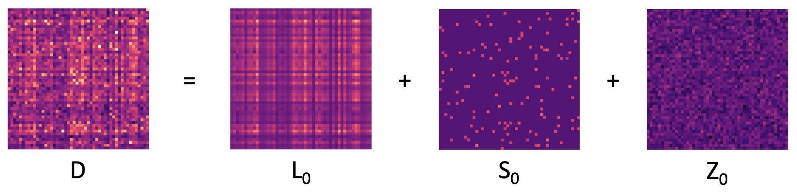
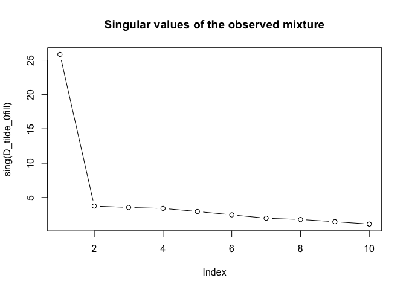
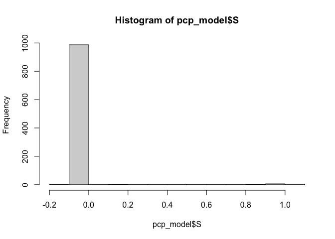

The R package pcpr implements Principal Component Pursuit (PCP), a robust dimensionality reduction technique, for pattern recognition tailored to environmental health data. The statistical methodology and computational details are provided in Gibson et al. (2022).
Installation
You can install the development version of pcpr from GitHub with:
# install.packages("pak")
pak::pak("Columbia-PRIME/pcpr")Modeling overview
PCP algorithms model an observed exposure matrix \(D\) as the sum of three underlying ground-truth matrices:

a low-rank matrix \(L_0\) encoding consistent patterns of exposure, a sparse matrix \(S_0\) isolating unique or outlying exposure events (that cannot be explained by the consistent exposure patterns), and dense noise \(Z_0\). All of these matrices are of dimension \(n \times p\), where \(n\) is the number of observations (e.g. study participants or measurement dates) and \(p\) is the number of exposures (e.g. chemical and/or non-chemical stressors). Beyond this mixtures model, the main assumption made by PCP is that \(Z_0 \sim \mathcal{N}(\mu, \sigma^2)\) consists of i.i.d. Gaussian noise corrupting each entry of the overall exposure matrix \(D\).
The models in pcpr seek to decompose an observed data matrix D into estimated low-rank and sparse components L and S for use in downstream environmental health analyses. The functions in pcpr are outfitted with three environmental health (EH)-specific extensions making pcpr particularly powerful for EH research:
- Missing value functionality
- Leveraging potential limit of detection (LOD) information
- Non-negativity constraint on the estimated
Lmatrix
Usage
pcpr supplies all of the functions needed to incorporate PCP into an environmental health analyses.
Below we run through a brief example, using pcpr to simulate an environmental mixture and then recover the mixture’s underlying consistent patterns and sparse outliers.
Simulating data
The sim_data() function lets users generate simple mixtures models for quick experimentation. Let’s use it to simulate a noisy environmental mixture comprised of 100 observations of 10 chemicals, with three underlying chemical exposure patterns (or a rank \(r = 3\)), extreme outlying exposure events along the diagonal of the matrix, and dense Gaussian noise corrupting all the measurements in the matrix:
library(pcpr)
data <- sim_data(
n = 100, p = 10, r = 3,
sparse_nonzero_idxs = seq(1, 1000, 101),
sigma = 0.05
)
D <- data$D
L_0 <- data$L
S_0 <- data$S
Z_0 <- data$ZWe can see L_0 has 3 underlying patterns using the matrix_rank() function:
matrix_rank(L_0)
#> [1] 3Because our mixtures data is often incomplete in practice, let’s simulate a random 5% of the values as missing NA with the corrupt_mat_randomly() function:
corrupted_data <- corrupt_mat_randomly(D, perc = 0.05)
D_tilde <- corrupted_data$D_tilde
D_tilde_0fill <- D_tilde
D_tilde_0fill[is.na(D_tilde)] <- 0The D_tilde matrix represents our observed, messy mixtures model, suffering from incomplete NA observations. In a moment we will run our PCP model on D_tilde directly. The D_tilde_0fill matrix imputes NA values with 0, allowing us to call functions that do not support missing NA values.
PCP model selection
There are two PCP algorithms shipped with pcpr: the convex root_pcp() [Zhang et al. (2021)] and non-convex rrmc() [Cherapanamjeri et al. (2017)]. To figure out which model would be best for our data, let’s inspect the singular values of our observed mixture using the sing() method:

rrmc() is best suited for data characterized by slowly decaying singular values, indicative of complex underlying patterns. Most EH data can be described this way. root_pcp() is best for data characterized by rapidly decaying singular values, indicative of very well-defined latent patterns.
For a simple example like the above, both PCP models are perfectly suitable. We will use rrmc(), as this is the model environmental health researchers will likely employ most frequently.
Tuning PCP parameters via grid search
To estimate the low-rank and sparse matrices, rrmc() needs to be given a maximum rank r and regularization parameter eta. To determine the optimal values of r and eta, we will conduct a brief grid search using the grid_search_cv() function. In our grid search below, we will examine all models from ranks 1 through 5 and all values of eta near the default, calculated with get_pcp_defaults().
The rrmc() approach to PCP uses an iterative rank-based procedure to recover L and S, meaning it first constructs a rank 1 model and iteratively builds up to the specified rank r solution. As such, for our grid search with grid_search_cv(), we pass etas as the grid argument we are searching and we send r = 5 as a constant parameter common to all models in the search. Since length(etas) = 6 and r = 5, we are grid searching through 30 different PCP models. The num_runs argument in grid_search_cv() determines how many (random) tests should be performed for each unique model setting. By default, num_runs = 100, so our grid search tunes r and eta by measuring the performance of 300 different PCP models.
eta_0 <- get_pcp_defaults(D_tilde)$eta
cat(paste("Default eta value: ", eta_0))
#> Default eta value: 0.0447213595499958
etas <- data.frame("eta" = sort(c(0.1 * eta_0, eta_0 * seq(1, 10, 2))))
gs <- grid_search_cv(D_tilde, pcp_fn = rrmc, grid = etas, r = 5)
#>
#> Initializing gridsearch...
#> The completed gridsearch will NOT be saved to any files, but simply returned.
#> Beginning parallel gridsearch using 16 cores and a multisession strategy...
#> Start time: 2025-03-20 01:02:07.802605
#>
#> Gridsearch completed at time: 2025-03-20 01:02:17.022088
#> Metrics calculations complete.
r_star <- gs$summary_stats$r[1]
eta_star <- round(gs$summary_stats$eta[1], 3)
head(gs$summary_stats)
#> # A tibble: 6 × 7
#> eta r rel_err L_rank S_sparsity iterations run_error_perc
#> <dbl> <int> <dbl> <dbl> <dbl> <dbl> <chr>
#> 1 0.224 3 0.135 3 98.9 NaN 0%
#> 2 0.313 3 0.137 3 99.0 NaN 0%
#> 3 0.134 3 0.143 3 31.8 NaN 0%
#> 4 0.134 4 0.143 3.03 30.8 NaN 0%
#> 5 0.134 5 0.143 3.03 30.8 NaN 0%
#> 6 0.224 4 0.155 4 99.0 NaN 0%Inspecting the summary_stats table from the output grid search provides the mean aggregated statistics for each of the 30 distinct parameter settings we tested. The grid search correctly identified the rank 3 solution as the best (lowest relative error rate). The corresponding eta = 0.224.
Running PCP
Now we can run our PCP model:
pcp_model <- rrmc(D_tilde, r = r_star, eta = eta_star)Let’s briefly inspect PCP’s estimate of the sparse matrix S, and fix any values that are “practically” zero using the hard_threshold() function. The histogram below shows a majority of the entries in S are between -0.2 and 0.2, so we will call those values “practically” zero, and the rest true outlying exposure events.
hist(pcp_model$S)
pcp_model$S <- hard_threshold(pcp_model$S, thresh = 0.2)Benchmarking with PCA
Before evaluating our PCP model, let’s see how well a more traditional method such as Principal Compoenents Analysis (PCA) can recover L_0, to provide a benchmark for comparison.
The proj_rank_r() function (project matrix to rank r) approximates an input matrix as low-rank using a rank-r truncated SVD, the same way PCA approximates a low-rank matrix. Normally, a researcher would need to determine r subjectively. We will give PCA an advantage by sharing PCP’s discovery from the above grid search that the solution should be of rank 3:
L_pca <- proj_rank_r(D_tilde_0fill, r = r_star)Evaluating PCP against the ground truth
Finally, let’s see how we did in recovering L_0 and S_0. We will examine the relative error between our model’s estimates and the simulated ground truth matrices. We use the Frobenius norm to calculate the relative errors between the matrices:
data.frame(
"Obs_rel_err" = norm(L_0 - D_tilde_0fill, "F") / norm(L_0, "F"),
"PCA_L_rel_err" = norm(L_0 - L_pca, "F") / norm(L_0, "F"),
"PCP_L_rel_err" = norm(L_0 - pcp_model$L, "F") / norm(L_0, "F"),
"PCP_S_rel_err" = norm(S_0 - pcp_model$S, "F") / norm(S_0, "F"),
"PCP_L_rank" = matrix_rank(pcp_model$L)
)
#> Obs_rel_err PCA_L_rel_err PCP_L_rel_err PCP_S_rel_err PCP_L_rank
#> 1 0.2944351 0.2340244 0.03337159 0.05924514 3PCP outperformed PCA by quite a bit! PCP’s relative recovery error on the L_0 matrix stood at only 3.34%, compared to an observed relative error of 29.44% and PCA’s relative error of 23.4%. PCP’s sparse matrix estimate was only off from the ground truth S_0 by 5.92%.
We can now pair our estimated L matrix with any matrix factorization method of our choice (e.g. factor analysis or NMF) to extract the latent chemical exposure patterns. These patterns, along with the isolated outlying exposure events in S, can then be incorporated with any outcomes of interest in downstream epidemiological analyses.
A real world application
The pcpr package also ships with a real world air pollution dataset queens consisting of fine particulate matter measurements (in µg/m^3) of 26 PM2.5 chemical species, recorded every three to six days from 04/04/2001 through 12/30/2021 courtesy of an EPA AQS monitoring site in Queens, New York City (NYC):
queens
#> # A tibble: 2,443 × 27
#> Date Al NH4 As Ba Br Cd Ca Cl
#> <date> <dbl> <dbl> <dbl> <dbl> <dbl> <dbl> <dbl> <dbl>
#> 1 2001-04-04 NA 1.62 NA NA NA NA NA NA
#> 2 2001-04-07 0 2.66 0 0.012 0.00488 0 0.0401 0.0079
#> 3 2001-04-13 0.0094 1.41 0.0016 0.024 0.00211 0.004 0.036 0
#> 4 2001-04-19 0.0104 1.22 0.001 0.006 0.00422 0 0.0543 0.003
#> 5 2001-04-25 0.0172 0.723 0.0024 0.015 0.00117 0 0.0398 0
#> 6 2001-05-01 0.0384 3.48 0.0017 0.041 0.00873 0.001 0.136 0
#> 7 2001-05-04 0.0964 6.22 0.0025 0.039 0.0111 0 0.137 0
#> 8 2001-05-07 0.004 0.233 0.001 0.016 0.00263 0 0.055 0.0054
#> 9 2001-05-10 0.0547 2.04 0.001 0.055 0.00521 0 0.121 0.001
#> 10 2001-05-13 0.0215 0.229 0 0.021 0.00122 0 0.0249 0
#> # ℹ 2,433 more rows
#> # ℹ 18 more variables: Cr <dbl>, Cu <dbl>, EC <dbl>, Fe <dbl>, Pb <dbl>,
#> # Mg <dbl>, Mn <dbl>, Ni <dbl>, OC <dbl>, K <dbl>, Se <dbl>, Si <dbl>,
#> # Na <dbl>, S <dbl>, Ti <dbl>, NO3 <dbl>, V <dbl>, Zn <dbl>You can follow along a real source apportionment analysis using the queens data in the source apportionment vignette.
PCP in environmental health studies
The methods in pcpr have already been applied in many environmental health studies. Several are listed below:
- Tao et al. (2023) apply PCP to investigate the association between source-specific fine particulate matter and myocardial infarction hospitalizations in NYC.
- Wu et al. (2024) employ PCP for exposome profiling of environmental pollutants in seminal plasma, uncovering novel associations with semen parameters.
- Benavides et al. (2024) use PCP to develop a Community Severity Index in NYC, measuring the barrier effect of road infrastructure and traffic in cities.
References
Gibson, Elizabeth A., Junhui Zhang, Jingkai Yan, Lawrence Chillrud, Jaime Benavides, Yanelli Nunez, Julie B. Herbstman, Jeff Goldsmith, John Wright, and Marianthi-Anna Kioumourtzoglou. “Principal component pursuit for pattern identification in environmental mixtures.” Environmental Health Perspectives 130, no. 11 (2022): 117008. [available here]
Zhang, Junhui, Jingkai Yan, and John Wright. “Square root principal component pursuit: tuning-free noisy robust matrix recovery.” Advances in Neural Information Processing Systems 34 (2021): 29464-29475. [available here]
Cherapanamjeri, Yeshwanth, Kartik Gupta, and Prateek Jain. “Nearly optimal robust matrix completion.” International Conference on Machine Learning. PMLR, (2017). [available here]
Tao, Rachel H., Lawrence G. Chillrud, Yanelli Nunez, Sebastian T. Rowland, Amelia K. Boehme, Jingkai Yan, Jeff Goldsmith, John Wright, and Marianthi-Anna Kioumourtzoglou. “Applying principal component pursuit to investigate the association between source-specific fine particulate matter and myocardial infarction hospitalizations in New York City.” Environmental Epidemiology 7 (2), (2023). [available here]
Wu, Haotian, Vrinda Kalia, Katherine E. Manz, Lawrence Chillrud, Nathalie Hoffmann Dishon, Gabriela L. Jackson, Christian K. Dye, Raoul Orvieto, Adva Aizer, Hagai Levine, Marianthi-Anna Kioumourtzoglou, Kurt D. Pennell, Andrea A. Baccarelli, and Ronit Machtinger. “Exposome Profiling of Environmental Pollutants in Seminal Plasma and Novel Associations with Semen Parameters.” Environmental Science & Technology, 58 (31), (2024): 13594-13604. [available here]
Benavides, Jaime, Sabah Usmani, Vijay Kumar, and Marianthi-Anna Kioumourtzoglou. “Development of a community severance index for urban areas in the United States: A case study in New York City.” Environment International, 185, (2024): 108526. [available here]